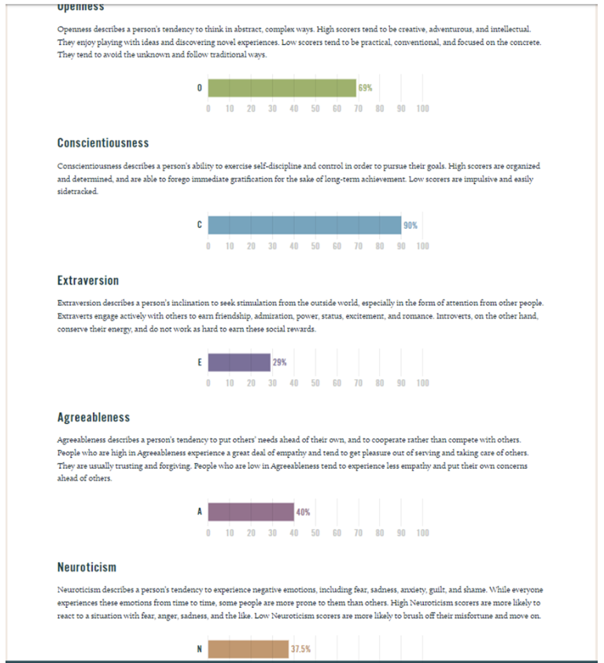
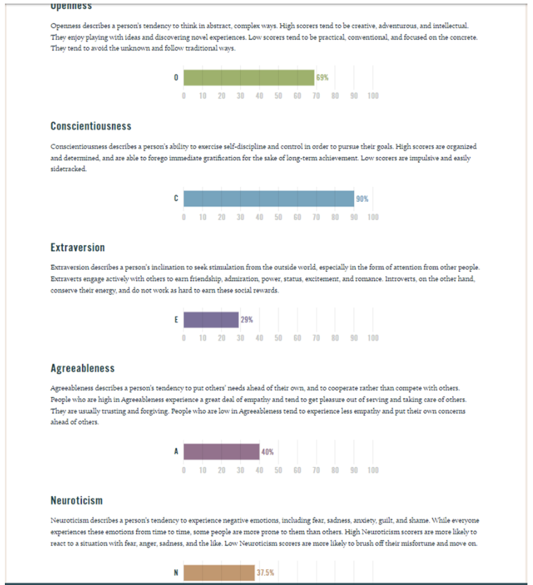

COSC1078 - Assignment 2 - The IT World
Team Profile
Personal Information
-
Mohamed Mohamed - s3853896
Mohamed lives in Melbourne with his parents. Mohamed speaks Somali at home as both his parents were born in Somalia. He has a great interest in writing poems which began in high school when he joined the poem program. He also enjoys playing video games, listening to hip hop music and watching animated movies.
Mohamed recognised his interest in IT when he attended a technology event that differentiated between internet speeds depending on connection and location. His experience includes creating a website on Wix.com and multiple databases on Microsoft Access.
-
John Huynh - s3840382
John is of Vietnamese background and lives in Australia. He enjoys catching up with his friends, eating out and playing video games.
John has had an interest in IT since he was very young, specifically how programs and applications run with code. He has some experience in python but is keen to develop his knowledge in order to make his own programs.
-
Tony Villani - s3968011
Tony lives in Melbourne and is of an Italian background. A hobby outside of his education is to make silver rings for his friends. His other interests include playing table tennis, going to the cinema and going out for a few drinks with friends.
Tony has always had an interest in IT and how IT is utilised in today’s world. Specifically, he has an interest in the way that artificial intelligence is implemented into technology. Tony does not have a large array of previous experience but is eager to further develop his skills.
-
Haidar ALkhalkhali - s3472621
Fluent in Arabic and English and possess a BSC in Biomedical Science. Interests include Anime, heavy metal music, football and IT. Possess basic knowledge of Python, Java and HTML. Haidar also has a background in sales and ecommerce.
-
Mohamad Abdallah - s3886739.
I am of Lebanese origin. I was a second year Bachelor of Project Management Student at RMIT. I also work at Optus as a part timer while I’m studying. Whilst studying and working for a massive company, I realised how powerful, vital and important Information Technology has on the progress and survival of organisations. This showed me how vital it was to gain Information Technology experience and leverage that in the business/ corporate world. Mohamad is mostly interested in Python and Java Script Coding.
-
Terrence Taylor - s3909238
Terrence was first intrigued by IT when he was young due to watching his father and uncle build his own computers. This was beneficial for him as he developed his knowledge by getting himself involved and interacting with his family who were able to teach him. The process of diagnosing technical problems in computer hardware and software interests Terrence in which he has experience with. He completed a work experience program in high school at an IT solution company where he was responsible for a file migration to a new management system.
Test Outcomes
-
Haidar Alkhalkhali

http://www.educationplanner.org/
Your scores:
Auditory: 25%
Visual: 40%
Tactile: 35%
https://www.123test.com/logical-reasoning-test/
A logic-based test displays an individual’s ability to find logical solutions based on patterns and reasoning skills
7 out of 10
Logical reasoning
Ability to distinguish patterns
Lack of ability to see logic
Haidar is mostly extraverted, so he is able to be sociable and outgoing. This will greatly benefit the outcome of this group assignment as great communication is essential when working in a team. Being able to easily describe his thoughts and ideas will allow a constant flow of productive engagement. He is also intuitive with a Debater personality. Haidar can give great insight to discussion being helpful during the selection of our project idea and if/how we will be able to create it.
-
Terrence Taylor
Myers Brigg Type Indicator
Logician Personality INTP-A
Dissatisfied and seeking perfection
Learning Preferences Test Result
Mild Kinesthetic
Utilises practical exercises/experiences
Big Five Personality Test
Openness 81
Conscientiousness 25
Extraversion 42
Agreeableness 52
Neuroticism 69
Terrence’s personality type describes him to seek perfection and is easily dissatisfied. Judging from his personality type results, he will be able to determine whether the project idea that we decide to choose has achievable goals when beginning to create it.
Terrence’s Learning Preference result was ‘Mild Kinesthetic’ meaning that he works well in a practical setting. This will be greatly beneficial in the next assignment when we are required to create our project idea.
-
Tony Villani


Big Five Personality Test
Openness 58
Conscientiousness 52
Extraversion 42
Agreeableness 100
Neuroticism 37.5
Tony’s test outcomes displayed that he has high ‘agreeableness’. He would rather work together as a team rather than compete with team members. The ‘Neuroticism’ result was somewhat low meaning he is able to be resilient when issues arise and try to move onto complete the desired goal.
-
Mohamed Mohamed
 

Mohamed’s test outcome displayed him having a high ‘conscientiousness’ result. In a group setting, this will be greatly beneficial as he sets high standards in his work and is organised. This assignment requires the group to set and meet deadlines in order to do their best work. Mohamed also scored low in ‘neuroticism’ where he is likely to move past issues that arise and find suitable solutions if required.
Ideal Jobs
|
John Huynh |
Haidar Alkhalkhal |
Terrence Taylor |
Tony Villani |
Mohamed Mohamed |
Mohamad Abdallah |
| Ideal Job |
Business Analyst |
Machine learning engineer |
System Admin |
IT System Admin |
IT network Admin |
Home automation business |
| Description |
Analyse business statistics and data to better understand how the business is performing and to help with the business decisions making process. |
Build and develop a machine learning platform. Building cloud-based platforms experimenting with data. |
Keeping a business’ network and servers updated and functioning as intended. |
Manage computer systems and networks and to let them run efficiently. Monitoring the system and reporting faults. |
Keeping a business’ network and servers updated and functioning as intended. |
Founding and creation of a home automation business. Entrepreneurship by innovating with a self-built home automation device that is more effective and cheaper than regular home automation devices. |
| Current Skills |
SQL skills, data sorting experience, IT lingo, presentation skills. |
Communication and stakeholder management skills |
Knowledge of database and computer systems. |
Communication skills and willingness to learn and gain IT qualifications |
Create and manage functioning databases. Programming experience. |
Marketing and sales experience. Managing and mentoring experience. |
| Skills needed |
SQL and python skills, further improved presentation skills, more analysis strategies and programs |
Experience in python, SQL, and machine learning |
Stronger knowledge of computer systems, system administration, network security and database experience. |
Communications skills, attention to detail, IT background with experience is network equipment, virtualisation and network infrastructure |
Relevant IT tertiary background, IT networks and infrastructure experience and knowledge and skills in Cisco switches. |
SQL experience, website building skills, marketing and sales experience. |
| Learning Plan |
Finish university course and gain relevant experience in internships |
Focus on university subjects, informational videos and STEM learning programs |
Going through university course and taking networking classes and co-curricular learning. |
Finish bachelors of IT and start an occupation to gain experience |
Complete undergraduate degree in IT and do industry placements to gain experience |
Finish bachelors of information technology and find jobs related to the ideal job and gain experience for it. |
In general, all our group members’ ideal jobs relate to the IT field and are very similar. Apart from John Huynh who is pursuing a career of being a business analyst. Everybody else in the group is pursuing a very IT dependent career that will require strong foundations and advanced learning in coding, IT infrastructure and computer systems. Terrence and Mohamed are both pursuing careers that are very similar being system admin and IT manager. Mohamed Abdallah is also pursuing a path of entrepreneurship and innovating his own product of a home automation device. Most of our members have communication skills and a basic understanding of IT coding. However, all our members need to improve and further advance their knowledge and skills in IT infrastructures and coding. The learning plan for our group members mainly consists of going through with their university courses and modules to learn the necessary skills needed for their ideal job and then getting themselves into the industry with placements or internships.
Tools
MS Teams Link
GitHub Repository
GitHub Pages Link
Group meeting 6/9/22: Created GitHub repository. Shared Github links from Assignment 1. Established and delegated roles. Created Google Doc
Group meeting 8/9/22:< Established roles with new team members and delegated tasks.
Industry Data
Job titles and industry demand:
Tony Villani
Tony's ideal position is the role of IT systems administrator. Providing technical support for general-purpose IT systems and networks could be categorised as a system administrator's job. The field of IT system administration is an expanding profession. The Bureau of Labour and Statistics (BLS) projects that between 2018 and 2028, there will be a 5% growth in the number of people employed in the field of IT system administration [1]. Over a ten-year period, that represents a rise of more than 18,000 employment. This figure excludes occupations created to replace the more than 383,000 sysadmin positions that are currently in existence [1].
Terrence Taylor
Terrence also desires to work as a System Admin/IT Manager position, which handles a variety of duties. A system administrators’ job is to provide technical support for generic IT systems and networks might be used to classify these duties. Employers are looking for a qualified professional that can handle a range of duties. Employers want someone who can provide general IT technical assistance and maintain a company's current software process. With strong emphasis on three software’s: WHMCS, Xero, and WorkFlowMax. On the network side, employers require the potential applicants to maintain a VMware server that hosts unique websites. This is to guarantee the safety of the network's backup systems. The Bureau of Labour and Statistics (BLS) expects,” a five percent increase in system administrator jobs between 2018 and 2028”[1].
Mohamed Mohamed
Mohamed’s preferred position is to work for the position as the IT Network Administrator. A network administrator's job is to maintain and make sure that an organisation's IT systems are working properly. It's a challenging job that involves working with people, from many different departments. This position requires individuals to identify issues that affect many different pieces of hardware or software. Local-area networks (LANs), wide-area networks (WANs), and other forms of networks are the responsibility of network administrators. Employers insist on employees who have strong communication, interpersonal and leadership skills. Employers want someone who could help the company adopt advanced systems for data storage and other operations. Also, this profession is “expected to grow by about 6% from 2016 through 2026”, from the Bureau of Labour statistics report[5].
Haider Alkhalkhali
Haider Alkhalkhali's desirable position is to work as a machine learning engineer. This position would give him the opportunity to develop his skills in this area. In this field, machine learning engineers utilise pre-existing algorithms and statistical techniques to either classify already-existing massive amounts of information or anticipate how a set of data will look in the future. This domain would give him the opportunity to develop his skills in this area, because he would receive training for duties that will demand such expertise in the future. This through the usage of Python, SQL, and machine learning. The need for both Artificial Intelligence (AI) and Machine Learning (ML) talents will increase at a compounded pace of “71% through 2025”, according to the Top 10 Tech Job Skills Predicted to Grow the Fastest in 2021 report [6].
Mohamad Abdallah
Mohamed Abdallah wants to work as a home automation business owner. This job will require him to have advanced proficiency in creating a business website (marketing purposes). Employers demand the ability to collaborate with other corporations, as well as superior marketing abilities. He will also need to have an advanced understanding of SQL database configuration and programming. Employers also require the skill to create a website for the company, so that the business could run smoothly. The report by Fortune Business Insights indicates a “compound annual growth rate of 12.3% [7]”.Therefore, there is going to be a huge investment in the future for devices that are connected to IoT (Internet of Things).
Skills required for these jobs:
Both Network administrators and IT system administrators are very similar, because they must be able to use a wide range of skills and experience to carry out their daily job. In our group, we have Terrence Taylor, Tony Villani, and Mohamed Mohamed who want to work as both these professional roles. IT system administrators and Network administrators will generally need to have; great writing and communication abilities, the ability to perform well under pressure and be able to overcome challenges [3]. Additionally, you will need to have previous experience and knowledge of IT-related abilities to work as an IT system administrator. For this job, networking, cloud, and SQL management expertise are essential [2]. Other technical skills employers demand include troubleshooting techniques, computer hardware, and addressing software issues that the company may have. Haider would hopefully want to work as a machine learning engineer. He will need technical expertise in programming and machine learning techniques. He needs these abilities because they will enable him to create software components with less need for human oversight. To perform more effectively, a machine learning engineer also needs good communication skills. For you to effectively communicate these insights to a non-technical staff, your shareholders, or clients, you'll need good communication skills. Mohamed Abdallah’s ideal position is to become a business owner in the home automation industry. He will need strong skills in troubleshooting and programming many different software and equipment. He will work with many different equipment-like computers, applications, and remote controls. For this reason, he must possess extraordinary technical abilities to install the systems in a way that meets the needs of the client. Along with his job-related talents, he will also need interpersonal skills. These abilities include anything from attitude and empathy to listening and communication.
How do these skills rank in terms of the current demand?
Network administrators require many different skills that are demanded from employers. These skills include IT-specific knowledge of network and systems management, software, and hardware. A desire to always push yourself to learn, adapt, and develop are general skills required for the position of network administrator. Also, employers look for applicants that have excellent written and verbal communication abilities.
What are the three highest ranked IT-specific skills which are not in your required skill set?
The top three IT-related qualities that are desired by employers but are not requirements are machine learning, cloud computing, and mobile application expertise. Although not necessary, these abilities are nevertheless valuable. The fact that new technology is constantly being introduced in business, means that you will need to stay up to date on the latest technological developments, which means you will also acquire new skills to learn.
Having a strong work ethic, being able to perform well in a team atmosphere, and having a pleasant attitude at work are the top three general qualities that are desirable but not required. These general skills are transferable soft skills that influence how well you interact with and relate to different people in the workplace, these skills are highly desired by employers.
Having looked at the Burning Glass data, has your opinion of your ideal job changed? Why or why not?
The Burning Glass data displays on a bar graph the highly sought-after skills. Employers are looking for applicants with outstanding communication, problem-solving, and troubleshooting abilities. Since a network administrator position requires all the aforementioned skills, my preferred career path hasn't altered. In 2021, adaptability, communication, and creative problem-solving skills were the most in-demand abilities [4]. My ideal career requires all these qualities, and companies are constantly on the lookout for those who have the similar skillset.
IT Work / IT Professionals
IT Professional 1 - Information Systems technician
Video link
What kind of work is done by the IT professional?
- Computer imaging (Microsoft deployment too for imaging)
- Answering phones
- User account creation, create email accounts, manage users (days vary)
What kinds of people does the IT professional interact with? Are they other IT professionals?
- Clients? Investors? The general public?
- answering phones,
- going into field and fixing any user and system issues
- Clients (Medical practices)
Where does the IT professional spend most of their time?
- Ticketing (service desk) keeps track of priority and time management
- At desk is where majority of time is spent (Windows environment)
- active directory exchange.
What aspect of their position is the most challenging?
- putting out fires.
- Never go into work expecting 1 thing to happen.
IT Professional 2 - Data Analyst
Video link
What kind of work is done by the IT professional?
- Majority of day Developing new dashboards, modding existing ones, debugging
- YouTube video editing (Youtuber)
What kinds of people does the IT professional interact with? Are they other IT professionals?
- 8:45am – 5pm answering emails from team and clients
- 9am Daily stand up with team
- Meeting with stakeholders about dashboards and new features requested for existing
- Meeting with colleague about debugging
Where does the IT professional spend most of their time?
- Work from home, at desk
- In meetings with other staff
What aspect of their position is the most challenging?
- Explaining issue is with data quality (dashboard only displaying that data)
IT Professional 3 - Software Engineer
Video link
What kind of work is done by the IT professional?
What kinds of people does the IT professional interact with? Are they other IT professionals?
Where does the IT professional spend most of their time?
What aspect of their position is the most challenging?
IT Professional 1 - Information Systems technician
Video link
What kind of work is done by the IT professional?
What kinds of people does the IT professional interact with? Are they other IT professionals?
Where does the IT professional spend most of their time?
What aspect of their position is the most challenging?